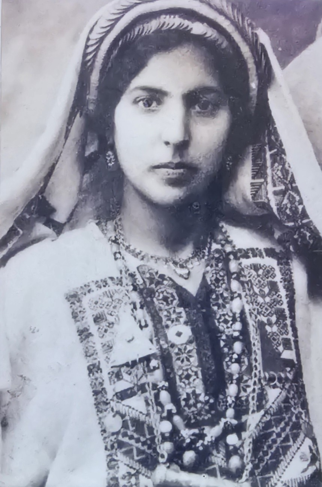

THE IMAGE
THAT REFUSED.
You can describe an image.
Can you claim its meaning?
A portrait from a personal archive enters a classification machine. Every attempt to understand it reduces something more. On the fourth attempt, the image refuses.

Instructions: Advance through four stages: Detect → Classify → Reduce → Refuse. Each stage changes the image and the language used to describe it.
Transparency: The classification system is an artistic simulation. The displayed labels are authored for this piece—not generated by a model—and no personal information is collected.
The missing field
is the person.
The machine can label what is visible. It cannot determine what a life means, what a family remembers, or whether visibility constitutes permission. These are not competing AI predictions; they are two different ways of relating to an image.
Machine taxonomy / scripted vocabulary
- 01 Face
- 02 Garment
- 03 Ornament
- 04 Archive object
Counter-taxonomy / what resists extraction
- 01 A life beyond the frame
- 02 A memory, not metadata
- 03 A story not inferred from appearance
- 04 The right to refuse a label
The counter-taxonomy makes an ethical claim, not a claim to know the photographed person's identity, feelings, or biography. This distinction matters: an archival image can be interpreted without pretending to recover information it does not contain.
Salaf:
absence as refusal.

Salaf #2102 — Woman with jewelry, Nouf Aljowaysir, from the series Salaf (Ancestors) (2020 onward). Image linked from the artist's site; when unavailable, the page displays a reference montage reproduced in Somaini, October 196 (2026), pp. 47–48. Artwork © Nouf Aljowaysir. Confirm permission for public reuse.
How do you refuse
to become data?
In Salaf, Nouf Aljowaysir tests machine vision against photographs of Bedouin communities and encounters errors rooted in limited, biased representations. She then removes people from Orientalist archival photographs, replacing them with white silhouettes.
By creating an absent dataset, she refuses to let these stereotyped representations become ordinary training material. The result makes absence visible—and turns technical segmentation into a political and artistic gesture.
What the archive
makes possible.
Which archive or dataset does the work use, and what is missing from it?
Salaf draws on photographs from Gertrude Bell's archive and Orientalist collections at the Getty Museum. Aljowaysir first tests machine-vision labels on Bedouin images, then removes human figures from a separate group of photographs to construct an “absent dataset.” The work exposes the underrepresentation and misrepresentation of non-Western cultures in learned AI representations. The article does not identify every training image used by the recognition systems.
What does latent space reveal, and what does it conceal?
The models' errors reveal learned associations: an object held by a child becomes a “skateboard,” and Bedouin clothing becomes a “military uniform.” A generative model trained on the erased images still reproduces recurring Orientalist poses and conventions. Such outputs reveal patterns retained by statistical representations while exposing their failure to preserve cultural specificity, lived identities, and historical context. The latent space itself is not directly visualized.
Is the strategy glitch, concealment, or refusal?
The central strategy is refusal enacted through deliberate concealment. White silhouettes prevent the photographed people from being treated as ordinary training material. Somaini quotes the artist describing this as “a symbolic act: a refusal to allow certain data to become training material” (2026, p. 46). Absence becomes a critique of who has the power to extract, classify, and reproduce human images.
Source: Antonio Somaini, “Latent Spaces: AI, Art, and the Archive,” October 196 (Spring 2026), pp. 18–60, especially p. 46. DOI ↗
Refusal without
disappearance.
The artistic move
This work reverses a strategy and replaces the source archive. It begins with a photograph from a personal collection rather than an institutional colonial archive. Instead of removing the depicted person, it makes the imaginary classifier lose authority over the image.
Four scripted operations—Detect, Classify, Reduce, Refuse—turn an intact portrait into isolated features and database-like fragments. In the final stage, the labels disappear and the person returns to full visibility.
Tools & transparency
Tools: one HTML file with embedded CSS and JavaScript, assembled with ChatGPT assistance and intended for editing in Visual Studio Code and publishing through GitHub Pages. A user-supplied archival portrait and documentation of Salaf are the visual sources.
No real recognition system is running. The classification labels, interface, and failures are deliberately staged as part of the artwork. The piece makes a conceptual argument; it is not evidence that an actual AI model failed to identify this person.
In Salaf, Aljowaysir removes people from Orientalist photographs as a refusal to supply their images to AI training. My work reverses that gesture: the person remains visible while a deliberately fictional classification interface grows more aggressive and eventually collapses. Refusal moves from the erased human figure to the authority of the category itself.
VISIBLE.
NOT
AVAILABLE.
Classification is not understanding.
Visibility is not consent.
A person is not the sum of their labels.